Doğanın en etkileyici canlılarını keşfedin
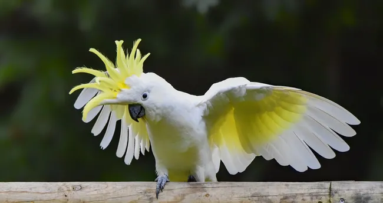
Cacatuoidea üst familyasındaki tek familya olan Cacatuidae familyasına ait 21 papağan türünden herhangi biridir.
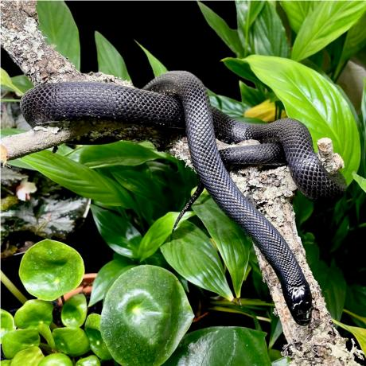
Tamamen parlak siyah rengiyle bilinen, zehirsiz, uysal bir yılan türüdür. Kemirgenler ve diğer yılanlarla beslenirler.
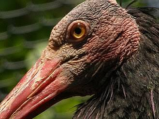
Başlarında tüy bulunmayan, parlak siyah tüylere ve uzun, kıvrık gagalara sahip göçmen kuşlardır ve ülkemizde koruma altındadırlar.
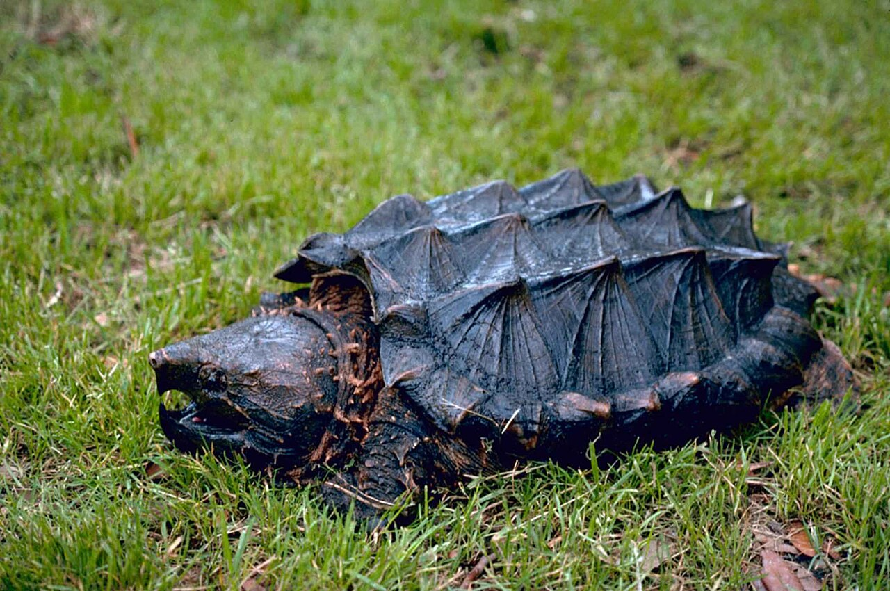
Kuzey Amerika'nın tatlı sularında yaşayan, adını sivri dikenli kabuğundan ve timsahı andıran güçlü çenesinden alan dünyanın en büyük tatlı su kaplumbağalarından biridir.
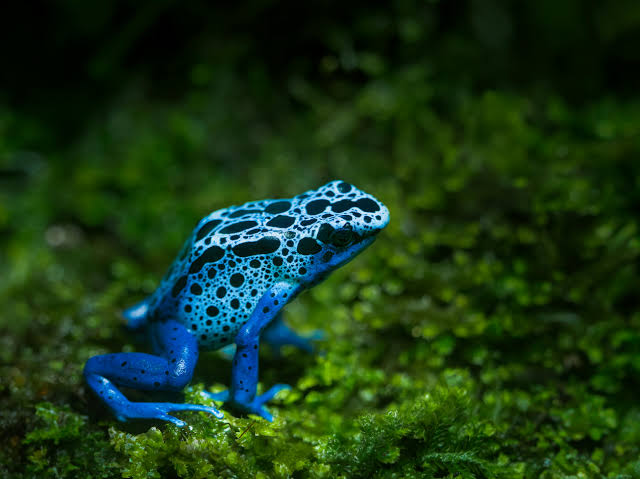
Dünyanın en zehirli canlılarından biridir. Boyları 2.5 ile 6 cm arasında değişen bu canlılar, yedikleri zehirli böcekler sayesinde zehir üretir ve bu zehri derilerinde depolar.
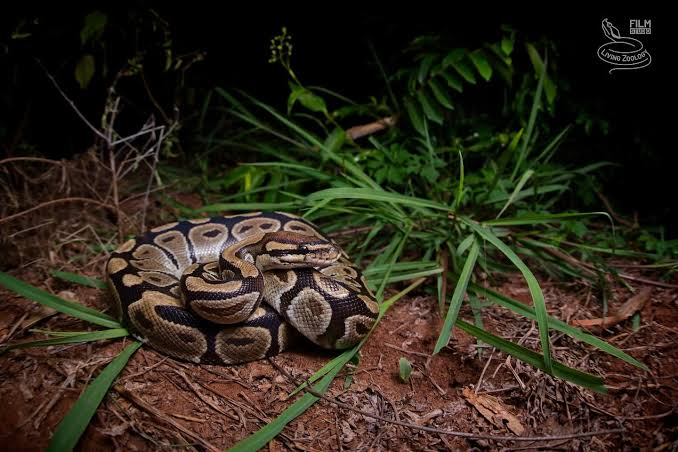
Tehlike anında kendini sıkı bir top şekline sokmasıyla bilinir.
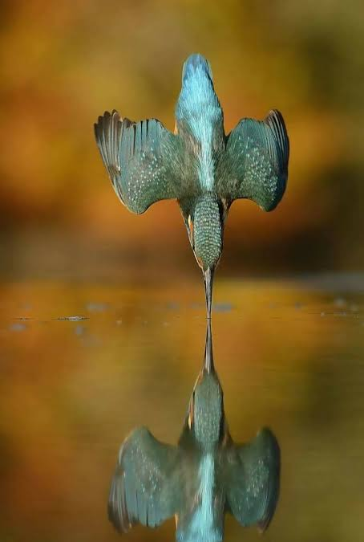
Dünyanın en küçük kuşlarıdır. Kanatlarını saniyede 80 defaya kadar çok hızlı çırpabilmeleri sayesinde havada asılı kalabilir ve geriye doğru uçabilirler.
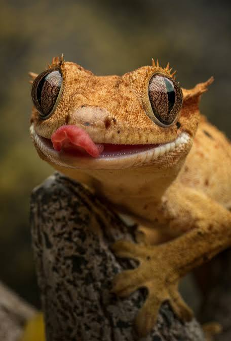
Yeni Kaledonya kökenlidir. Gözlerinin üstündeki kirpiksi yapıları ve cama bile tırmanmalarını sağlayan vantuzlu ayaklarıyla tanınırlar.
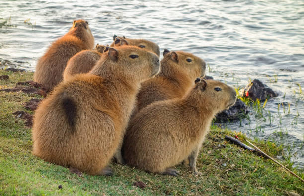
Güney Amerika'ya özgü, dünyanın yaşayan en büyük kemirgenleridir. Sakin ve arkadaş canlısı yapılarıyla tanınan yarı sucul memelilerdir.
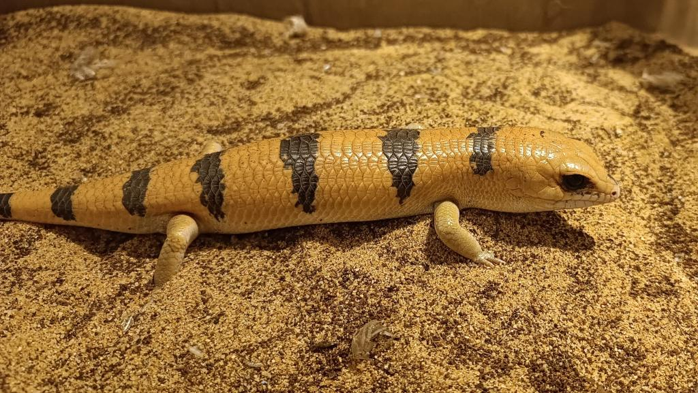
Peter's banded skink veya Peters kaya agaması), sürüngen dünyasında kendine has fiziksel özellikleri ve bakımıyla bilinen egzotik bir kertenkele türüdür.
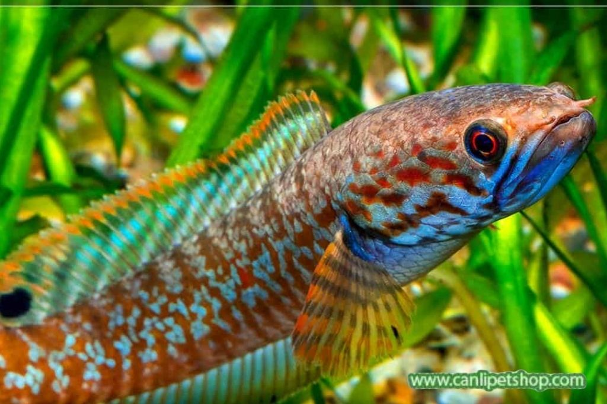
Su dışında da hava soluyabilen, karada kısa mesafeler hareket edebilen ve sudaki diğer canlıları avlayan, oldukça dayanıklı, yırtıcı bir tatlı su balığıdır.
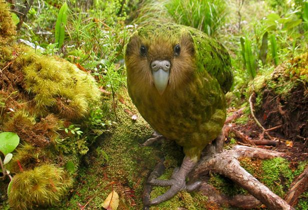
Avustralya'nın kurak iç kesimlerinde yaşayan, gündüzleri çalılıkların arasında saklanan ve geceleri aktif olan son derece nadir ve gizemli bir kuş türüdür. Yüzyıldan uzun süre neslinin tükendiği sanılmış, ancak yakın yıllarda yeniden görüntülenerek varlığı kanıtlanmıştır.
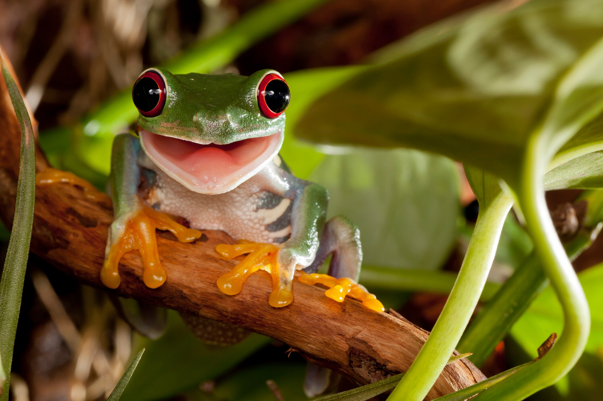
Parlak renkleriyle bilinen, Orta Amerika yağmur ormanlarına özgü, ağaçlarda yaşayan gececil bir amfibidir. Göz alıcı görünümüne rağmen zehirli değildirler.